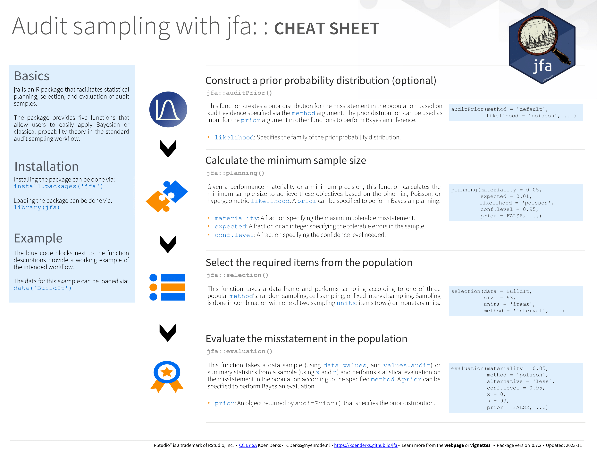

vignettes/articles/audit-sampling.Rmd
audit-sampling.RmdWelcome to the ‘Audit sampling’ vignette of the jfa package. This page provides a straightforward guide to the functions in the package that are designed to facilitate statistical audit sampling. Specifically, these functions implement standard audit sampling techniques to calculate sample sizes, select items from a population, and evaluate the misstatement in a data sample compliant with international standards on auditing (American Institute of Certified Public Accountants (AICPA), 2021; International Auditing and Assurance Standards Board (IAASB), 2018; Public Company Accounting Oversight Board (PCAOB), 2020). The package allows enables to specify a prior probability distribution to conduct Bayesian audit sampling using these functions.
Below you can find an explanation of the available functions in jfa, sorted by their occurrence in the standard audit sampling workflow.
The auditPrior() function is used to specify a prior
distribution for Bayesian audit sampling. It enables formal translation
of pre-existing audit information into a prior distribution or complete
customization of the prior distribution. The function returns an object
which can be used with associated summary() and
plot() methods. Objects returned by this function can also
be used as input for the prior argument in other functions.
Additionally, these objects have a corresponding predict()
method to generate the predictions of the prior distribution on the data
level.
For additional details about this function, please refer to the function documentation on the package website.
Example usage:
# Beta prior based on inherent risk (70%) and control risk (50%)
prior <- auditPrior(
method = "arm", likelihood = "binomial",
materiality = 0.05, ir = 0.7, cr = 0.5
)
summary(prior)##
## Prior Distribution Summary
##
## Options:
## Likelihood: binomial
## Specifics: ir = 0.7; cr = 0.5; dr = 0.1428571
##
## Results:
## Functional form: beta(α = 1, β = 21)
## Mode: 0
## Mean: 0.045455
## Median: 0.032468
## Variance: 0.0018865
## Skewness: 1.7442
## Information entropy (nat): -2.0921
## 95 percent upper bound: 0.13295
## Precision: 0.13295The planning() function is used to calculate a minimum
sample size for audit samples. It allows the specification of approval
conditions for the sample with respect to performance materiality or
precision. The function returns an object which can be used with
associated summary() and plot() methods. To
perform Bayesian planning, the input for the prior argument
can be an object returned by the auditPrior() function, or
an object returned by evaluation()$posterior.
For additional details about this function, please refer to the function documentation on the package website.
Example usage:
# Poisson likelihood
x <- planning(materiality = 0.03, likelihood = "poisson")
# Default beta prior and binomial likelihood
x <- planning(materiality = 0.03, likelihood = "binomial", prior = TRUE)
# Custom beta prior and binomial likelihood
x <- planning(materiality = 0.03, likelihood = "binomial", prior = prior)
summary(x)##
## Bayesian Audit Sample Planning Summary
##
## Options:
## Confidence level: 0.95
## Materiality: 0.03
## Hypotheses: H₀: Θ > 0.03 vs. H₁: Θ < 0.03
## Expected: 0
## Likelihood: binomial
## Prior distribution: beta(α = 1, β = 21)
##
## Results:
## Minimum sample size: 78
## Tolerable errors: 0
## Posterior distribution: beta(α = 1, β = 99)
## Expected most likely error: 0
## Expected upper bound: 0.029807
## Expected precision: 0.029807
## Expected BF₁₀: 10.018The selection() function is used to perform statistical
selection of audit samples. It offers flexible implementations of the
most common audit sampling algorithms for attributes sampling and
monetary unit sampling. The function returns an object which can be used
with associated summary() and plot() methods.
For convenience, the input for the size argument can be an
returned by the planning() function.
For additional details about this function, please refer to the function documentation on the package website.
Example usage:
# Fixed interval monetary unit sampling
x <- selection(
data = BuildIt, size = 100, units = "values",
method = "interval", values = "bookValue"
)
summary(x)##
## Audit Sample Selection Summary
##
## Options:
## Requested sample size: 100
## Sampling units: monetary units
## Method: fixed interval sampling
## Starting point: 1
##
## Data:
## Population size: 3500
## Population value: 1403221
## Selection interval: 14032
##
## Results:
## Selected sampling units: 100
## Proportion of value: 0.037014
## Selected items: 100
## Proportion of size: 0.028571The evaluation() function accepts a sample or summary
statistics of the sample and performs evaluation according to the
specified method. The function returns an object which can
be used with associated summary() and plot()
methods. To perform Bayesian evaluation, the input for the
prior argument can be an object returned by the
auditPrior() function, or an object returned by
evaluation()$posterior.
For additional details about this function, please refer to the function documentation on the package website.
Example usage:
# Poisson likelihood
x <- evaluation(x = 1, n = 100, method = "poisson")
# Default beta prior and binomial likelihood
x <- evaluation(x = 1, n = 100, method = "binomial", prior = TRUE)
# Custom beta prior and binomial likelihood
x <- evaluation(x = 1, n = 100, method = "binomial", prior = prior)
summary(x)##
## Bayesian Audit Sample Evaluation Summary
##
## Options:
## Confidence level: 0.95
## Method: binomial
## Prior distribution: beta(α = 1, β = 21)
##
## Data:
## Sample size: 100
## Number of errors: 1
## Sum of taints: 1
##
## Results:
## Posterior distribution: beta(α = 2, β = 120)
## Most likely error: 0.0083333
## 95 percent credible interval: [0, 0.038604]
## Precision: 0.030271To ensure the accuracy of statistical results, jfa employs automated unit tests that regularly validate the output from the package against the following established benchmarks in the area of audit sampling:
The cheat sheet below will help you get started with jfa’s intended audit sampling workflow. A pdf version can be downloaded here.
